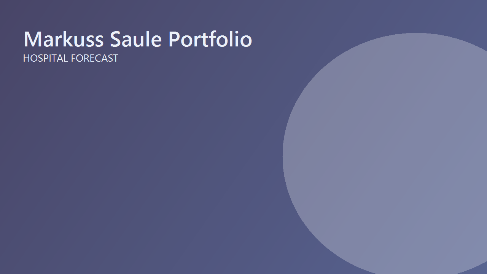

Hospital Financial Forecasting Dashboard (Excel)

Overview
An interactive Excel model that forecasts hospital revenue, cost, and profitability by department. Users can adjust assumptions like cost inflation, readmission reduction, and payer reimbursement to instantly see how operational decisions affect financial outcomes.
What I Did
- Defined the business objective, metric targets, and analysis scope.
- Built and validated the data, modeling, and reporting workflow.
- Packaged outputs for stakeholder interpretation and decision support.
Results/Impact
Delivered an analysis workflow with decision-ready outputs and reusable artifacts.
Tech Stack
- Data Analysis, Excel, Forecasting, Risk Modeling, XLOOKUP
Deliverables
- Project brief: (add file)
- Slides/report: (add file)
- Dashboard/model file: (add file)
- SQL/notebook/code bundle: (add file)
Project Notes
Description: An interactive Excel model that forecasts hospital revenue, cost, and profitability by department. Users can adjust assumptions like cost inflation, readmission reduction, and payer reimbursement to instantly see how operational decisions affect financial outcomes. Skills Demonstrated: Data Analysis, Excel, Forecasting, Risk Modeling, XLOOKUP Project Status: Planning
Project Overview
The goal was to design and build a fully functional Hospital Financial Forecasting Dashboard that could simulate future operational performance using dynamic assumptions, automation, and professional-grade visualization.
The workbook models how departments in a hospital (Cardiology, Orthopedics, ICU, Oncology, and General Surgery) perform financially under changing operational and payer-mix conditions.
It��s built from scratch using advanced Excel formulas, structured references, dynamic arrays, and user-driven controls, and is designed to feel like a real-world analytics tool that leadership could use to plan, forecast, and present to executives.
Project Objectives
- Build an interactive dashboard for hospital executives to view departmental and global KPIs.
- Allow users to adjust operational and financial levers to simulate different ��what-if�� scenarios.
- Automate all forecasts and metrics through structured Excel logic, with no manual updates.
- Ensure the final dashboard is clean, intuitive, and presentation-ready.
Data & Structure
The model is divided into four main sheets, following best practices for professional modeling:
| Sheet | Purpose |
|---|---|
INPUT_DATA |
Contains all baseline monthly data (Jan 2023��Sept 2025). |
MODEL_ASSUMPTIONS |
Houses user inputs like cost inflation, readmission reduction, and payer adjustments. |
CALCULATIONS |
Performs all forecast logic using dynamic, structured formulas. |
DASHBOARD |
Displays the final results visually through KPIs, charts, and tables. |
How It Works
1. Operational Levers
Users can adjust expected volume growth by department to forecast changes in patient volumes.
| Department | Volume Adj % |
|---|---|
| Cardiology | 5% |
| Orthopedics | 10% |
| ICU | 4% |
| Oncology | 7% |
| General Surgery | 8% |
2. Financial Levers
Users can simulate reimbursement and payer mix shifts for each payer category.
This lets analysts evaluate how revenue would change if, for example, Medicaid volume increases or private payer reimbursements improve.

3. Key Calculations
In the CALCULATIONS sheet, baseline data feeds through formulas to calculate:
- Forecasted Volume �� accounts for volume growth and compounding over time
- Forecasted Cost/Patient �� inflation-adjusted using user inputs
- Forecasted Readmission Rate �� reduced based on target efficiency
- Forecasted Reimbursement % �� adjusted by payer mix assumptions
- Forecasted Revenue, Cost, Margin, and Savings �� fully automated through SUMIFS and structured table logic

4. Dynamic KPIs
The dashboard displays both Department-level KPIs (based on the user��s dropdown selection) and Global Hospital KPIs for an overall view.
| Metric | Description |
|---|---|
| Total Forecasted Revenue | Total collected revenue per department |
| Total Forecasted Cost | Inflation-adjusted operating costs |
| Forecasted Margin (%) | Profitability after all expenses |
| Readmission Savings | Estimated avoided cost from readmission reduction |
| Denied Revenue | Revenue lost due to claim denials |

Dashboard Features

The final dashboard was designed to look and feel like a professional hospital analytics tool.
Top Left: User controls for selecting department, payer, and simulation inputs.
Left Column: Interactive sliders for adjusting readmission reduction and cost inflation.
Center: Department-specific KPIs, quality metrics, and payer-type breakdown.
Right: Global hospital KPIs, key insights, and performance comparisons.
Visuals
Department Margin % Comparison
A horizontal bar chart visualizes each department��s profitability, helping identify the weakest-performing areas.

Revenue vs. Cost by Department
A grouped column chart compares revenue and cost for each department side by side, showing whether each operates profitably or at a loss.

Adjusted Net Revenue by Payer Type
A donut chart displays the share of total net revenue across payer categories, offering a quick sense of financial dependency.

Alerts & Automation
A ��Performance Alerts�� section automatically updates with contextual warnings, such as:
Department operating at a loss. Review cost drivers.
This alert is condition-based, triggering when a department��s forecasted margin is below 0%.

User Experience
- Entirely driven by dropdowns and sliders, making it intuitive even for non-technical users.
- All color themes follow a consistent blue-gray-orange palette used in professional dashboards.
- Each section is visually separated with borders and titles, so the layout feels balanced and presentation-ready.
Key Excel Techniques Used
Advanced Formulas
SUMIFS,INDEX-MATCH,FORECAST.LINEAR,IFERROR, andFILTER- Compounding logic for future months
- Dynamic named ranges and structured table references
Design & Usability
- Conditional formatting for alerts
- Custom formatting for currency, percentages, and units
- Consistent spacing, alignment, and use of color hierarchy
Automation
- Interactive controls using Form Buttons and spin buttons linked to assumption cells
- Macro to export the dashboard as PDF with a timestamped file name
Impact & Application
This project demonstrates how Excel can be used not just for analysis, but also as a decision-support tool.
It��s something that could realistically help a hospital��s finance or operations department run ��what-if�� scenarios, forecast costs, and present performance to executives.
For me, it ties directly into my career focus in Business Analytics and Data Visualization!
Reflection
Building this model pushed me to apply nearly every Excel concept I��ve learned, from forecasting functions and dynamic ranges to professional dashboard design and data visualization.
It taught me to think like an analyst, but also like a designer, ensuring that every number on screen not only works, but communicates something clearly.
Next Steps:
I plan to keep refining this model and expand it into a Power BI version later, integrating SQL-based data sources and automated refresh logic.
Attribution
Designed and developed by Markuss Saule.